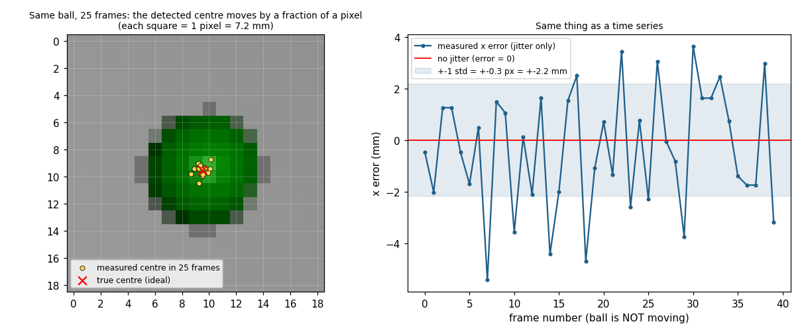

الدرس C1 · توضيح
اهتزاز المركز (centroid jitter) ببساطة
1. ماذا تفعل الكاميرا في كل إطار؟
في كل إطار نجد الكرة في الصورة ونحسب مركزها (B2): رقمان (u, v). لو كانت الكاميرا مثالية والكرة ساكنة، لحصلنا على الرقمين نفسيهما في كل إطار بالضبط.
2. ماذا يحدث في الكاميرا الحقيقية؟
الكرة ساكنة، لكن الصورة نفسها تتغير قليلاً من إطار لآخر: وميض ضوء خفيف، ضجيج إلكتروني في المستشعر، بكسلات على حافة الكرة تتأرجح بين «كرة» و«أرض». فيتغير القناع قليلاً، فيتحرك المركز الذي نحسبه جزءاً صغيراً من بكسل. هذا هو الاهتزاز.
تشبيه: تقيس طول طاولة بمسطرة في ضوء خافت. في كل مرة تقرأ رقماً يختلف قليلاً (مرة 120.3 ومرة 119.8)، مع أن الطاولة لم تتغير.
3. الصورة

- اليسار: كرتنا الحقيقية مكبّرة (كل مربع صغير هو بكسل). العلامة الحمراء هي المركز الصحيح. النقاط الصفراء هي المركز الذي وجدناه في 25 إطاراً: تتوزع حوله بجزء من بكسل، أي أنها كلها داخل بكسل واحد تقريباً.
- اليمين: الشيء نفسه كسلسلة زمنية. الكرة ساكنة (الخط الأحمر هو «لا خطأ»)، والخطأ المقيس يتذبذب بين −5 و+3.5 مم. المنطقة الزرقاء الفاتحة هي ±2.2 mm.
4. ما معنى «0.3 بكسل»؟
هو الانحراف المعياري (standard deviation) للاهتزاز، أي حجم الاهتزاز النموذجي. معناه عملياً: في حوالي 68% من الإطارات يكون الخطأ أقل من 0.3 بكسل، وفي حوالي 95% أقل من 0.6 بكسل (هذا لأن الاهتزاز موزع بشكل طبيعي، Gaussian، وسنشرحه في الطبقة 2).
5. من البكسل إلى المليمتر
الخطأ هنا بوحدة البكسل، لكننا نريده بالملّيمتر على الأرض. في كاميرتنا (3 م، 60°) كل بكسل يغطي 7.22 mm (درسنا هذا في B1: Z/f = 3/415.7). فنضرب:
0.3 px × 7.22 mm/px = 2.17 mm
أي أن الكرة «ترتجف» بحوالي 2.2 ملّيمتر على الأرض، وبالطبع على المحورين x وy كل منهما مستقل.
6. من أين جاء الرقم 0.3؟ (صدق)
- هو رقم اخترتُه أنا (placeholder)، ولم نقسه من كاميرا حقيقية.
- للمقارنة: حتى في صورة بلا أي ضجيج، التقريب إلى شبكة البكسلات وحده يعطي اهتزازاً داخلياً بحوالي 0.08 بكسل (الدرس B2 L3). الكاميرا الحقيقية تضيف ضجيج الصورة، فـ 0.3 معقول، لكنه ليس مقيساً.
- سنحدد هذا الرقم لاحقاً من المراجع أو من تجربة، وسنختبر حساسية النتائج له.
7. لماذا يهمنا؟
هذا الخطأ يدخل في كل قياس مكان. والـ estimator يحسب السرعة من فرق مكانين، فيتضخم الخطأ 60 مرة (A1): √2 × 2.17 mm × 60 ≈ 0.18 m/s خطأ في السرعة على محور واحد لو استعملنا الفرق البسيط. وهذا سبب حاجتنا إلى مرشّحات مثل Kalman.
وهو أيضاً يعتمد على الكاميرا: بنفس الـ 0.3 بكسل، تصبح 1.4 مم عند زاوية 40° (البكسل 4.55 مم)، فاختيار الكاميرا (B4) يغيّر الـ noise بالمليمتر.
سؤال للتأكد (احسب بنفسك)
إذا كانت الكاميرا على ارتفاع 2 م بنفس الزاوية 60° (البكسل 4.81 مم)، فكم يصبح اهتزاز المركز بالمليمتر عند 0.3 بكسل؟